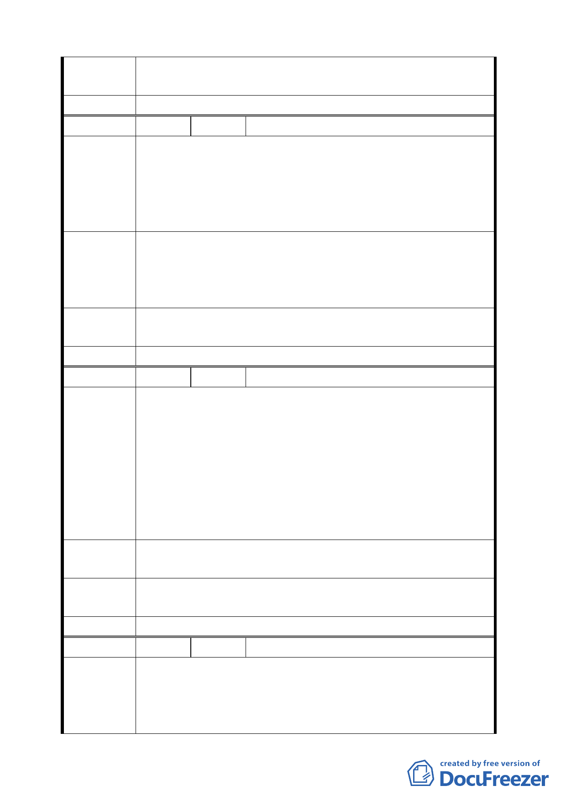

專案小組
審 查 結 論 同編號 1。
委員會決議 同編號 1。
編 號 14 陳情人 蕭楊貞貞等七人、蕭楊貞貞（住二十六）
一 、 土 地 標 示 ： 士 林 區 福 林 段 二 小 段 0019-0001-0000
0015-0001-0005 0017-0000-0011 0018-0000 等地號。
陳 情 理 由 二、楊友濂於 89 年 8 月 6 日往生由楊黃月裡等七人繼承繳遺
產稅近 3 仟萬元整，現在住宅區變更為保護區我們損失
慘重希望政府能給我們合理的補償。
政府的法令說改就改把人民生計財產都不顧，現在住宅區改
建 議 辦 法 變成保護區，我們所繳的遺產稅不是都泡湯了嗎?我希望政府
一定要補償我們的損失，把我們割給政府的地歸還給我們，
謝謝。
專案小組
審查結論
同編號 1。
委員會決議 同編號 1。
編 號 15 陳情人 吳崑松（住二十六）
一、土地標示：士林區福林段二小段 16 地號。
二、今年八月，都發局將陽明山附近之保變住土地，更改為
保護區。
陳情理由
三、本人之土地，在士林區福林段二小段 16 地號，面積 92
平方公尺，屬於保變住 26 區，全區面積只有 9460 平方
公尺，坡度不大，目前已經有許多民房，又靠近東吳大
學校區，也有細部計畫，實在不宜變更回去保護區，以
符民意。
保護區變住宅區第 26 區，不可變回為保護區，仍應保留為住
建 議 辦 法 宅區。
專案小組
審查結論
同編號 1。
委員會決議 同編號 1。
編 號 16 陳情人 陳慶同
一、貴府 94 年 6 月 9 日府都規字第 09413545800 號公告,將
陳情理由
不適宜開發之第一類山坡地住宅區朝向回復為保護區之
方法辦理,第二ヽ三類地區降低開發強度。
二、本人所有土地為士林區新安路二小段
一二